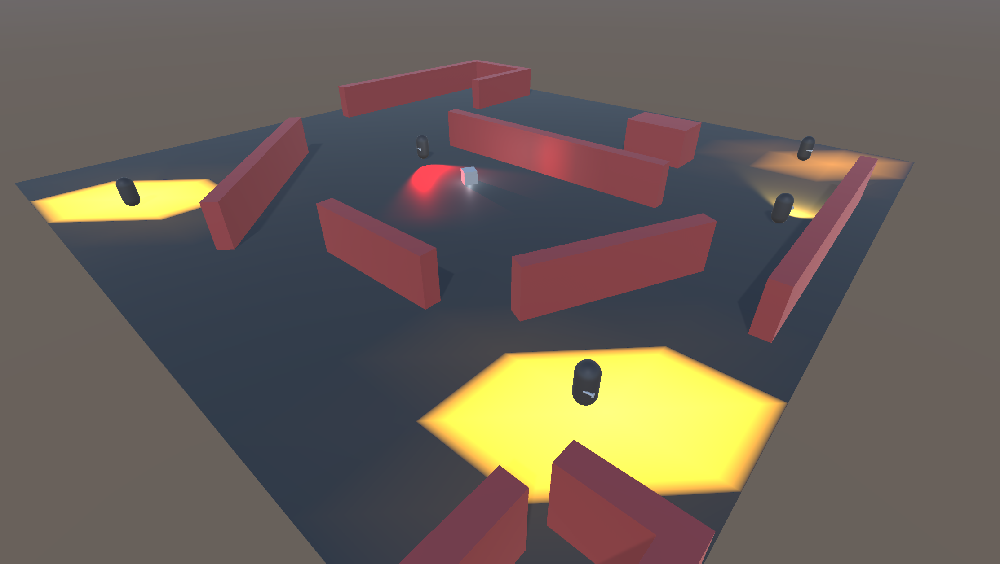

Stealthy Stealth
Beginner Unity Project
Finished on: August 2021
I spent many years learning how to properly code in many different
languages and styles, but apparrently that doesn't mean I instantly
know how to use Unity. Who knew.
After searching around for a tutorial that was not too easy or
promising to help teach how to make a game without code
(what would be the point of my expensive degree?), I finally found
tutorial that was perfect. A youtuber I already knew and loved,
Sebastian Lague, made a lovely tutorial series that finished with
a test. Make a stealth game.
While I cannot claim the idea, the series required that all steps be
attempted before Sebastian's answer be shown, so it's at least mostly
my work. It also taught me a lot about how to get started with Unity.
I'm proud of this first product I made and I'm excited to try my
other Unity ideas (right after I finish cleaning this game up).
Graduation
Required for Money and Fulfillment

Finished on: June 2021
Is this a project? Maybe, IDK, but I did it. Woo, go me.
3 years of mechanical engineering, sudden realization I didn't want to do
that, then 3 more of computer science. It was a long and difficult
task, but it was the easy part.
Now just to find a job...
Handheld AR Device
Senior Capstone

Finished on: June 2021
This project is meant to create an AR device that is more intuitive
and more easliy shared. The ideal finished project would work similar
to a flashlight but could scan markers and project information.
The project uses a Raspberry Pi 4 Model B with a camera to capture a
video feed. The frame will be parsed using OpenCV to find a ArUco
marker as a fiducial. The marker's id would describe the data that
needs to shown at that space. A graphic would then be created to match
projected back out. The graphic would be placed in the scene relative
to ArUco marker.
Our portion of the project of the product required my team to begin
researching the necessary technology and to develop the software. I
finished work to create and read ArUco markers in the
environment. I then used that marker to place and orient basic shapes
and text in the frame.
My work was on all software past setting up the Raspberry PI. That included
creating and managing the necessary ArUco markers, detecting and
reading ArUco markers, and in creating the homography so that any
graphics could be properly placed in the projection.
GLSL Wave Simulation
Shaders class final

Finished on: March 2021
For the Oregon State shaders course taught by Professor Mike Bailey, the final project is choosen by the students. For my project I chose to use Gerstner waves created in the vertex shader to simulate deep water. The program uses four overlapping waves that can all be adjusted individually to create different patterns.
Bowling Alley Rest API
Cloud App Development Final

Finished on: December 2020
This is an API I designed to handle customers in a fictional bowling alley and is hosted on GoogleCloud and deployed on Google App Engine. By visiting the url the user will be asked to log in through google and oAuth2.0. If they are successful their login token will posted onscreen and in the database. The documentation listed under docs gives a complete description of the API. After logging in, a user can interact with the database by sending the requests to the defined endpoints. I used postman to send requests and an environment along with a series of tests are included in the docs folder.